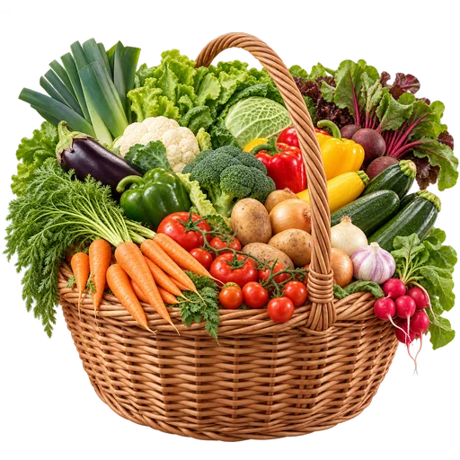
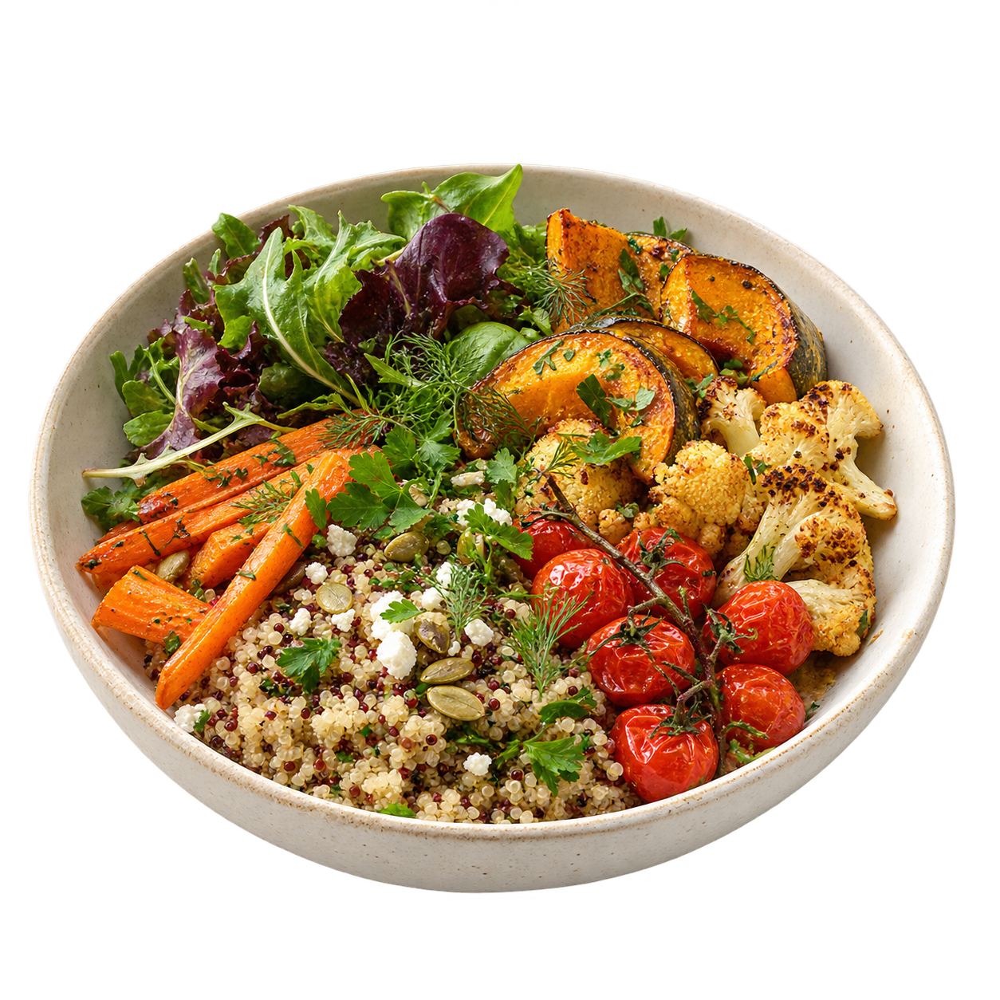

01
O VisionChef identifica
O sistema sinaliza lotes próximos da validade com base na data cadastrada. A equipe confere quantidade, rótulo, embalagem e conservação.
Uma caixa que já não vai para a prateleira pode ser o começo de uma refeição na mesa de alguém. O VisionChef aproxima seu estoque de instituições que podem receber — com segurança, dentro da validade e a tempo.

Quando alimento bom encontra o caminho certo, ele pode chegar a quem precisa. A doação só segue se estiver segura, bem conservada e dentro da validade.
Veja como fazemos isso com responsabilidadeDa identificação do lote à confirmação da entrega, cada etapa foi pensada para que a solidariedade também seja segura e organizada.
O sistema sinaliza lotes próximos da validade com base na data cadastrada. A equipe confere quantidade, rótulo, embalagem e conservação.
O Dono ou gerente encontra uma instituição aprovada, compatível com o tipo de alimento e com capacidade para receber a doação.
A instituição aceita e confirma a janela de retirada. Perecíveis pedem percurso curto e conservação contínua conforme o fabricante.
O recebimento fica registrado com lote, validade, quantidade, responsáveis e condições de transporte. Mais clareza para todos.
Um lote que não encontrou espaço na prateleira pode encontrar um lugar à mesa. A conexão certa faz isso acontecer com dignidade e cuidado.
A CAUSA QUE ALIMENTA · VISIONCHEFQuando um alimento excedente continua próprio para consumo e foi conservado corretamente, o VisionChef ajuda o restaurante a oferecê-lo a uma instituição cadastrada. A equipe combina a retirada a tempo e registra a entrega. Assim, o alimento seguro encontra um novo destino, com cuidado e dignidade.
Conecte seu restaurante à causa
A doação só acontece após a conferência do alimento e quando há tempo para transporte e consumo antes do vencimento. A instituição confirma o recebimento; segurança e cuidado vêm em cada etapa.
As regras abaixo são a base do fluxo. Políticas locais e exigências da Vigilância Sanitária podem complementar os requisitos.
A Lei nº 14.016/2020 prevê doação de alimentos próprios para consumo, dentro do prazo de validade e nas condições de conservação aplicáveis. O sistema bloqueia a doação para consumo humano após a data de validade.
Ler a Lei nº 14.016/2020 ↗Respeite as instruções do fabricante em armazenamento e transporte. Se a cadeia de temperatura não puder ser garantida, o produto não é oferecido.
Verifique rótulo, validade, integridade, sinais de deterioração e condições de conservação. Qualquer dúvida interrompe a doação.
O produto deve chegar à instituição e ao beneficiário antes de vencer. O sistema usa um limite interno com margem para coleta e distribuição.
Documente lote, quantidade, responsáveis, datas e temperaturas quando aplicável. A confirmação da entrega encerra o fluxo operacional.
Os alertas de antecedência são parâmetros operacionais configuráveis por categoria e logística. O prazo indicado no rótulo e a segurança do alimento sempre prevalecem.
Ajude a conectar excedentes próprios para consumo com instituições que podem recebê-los a tempo.